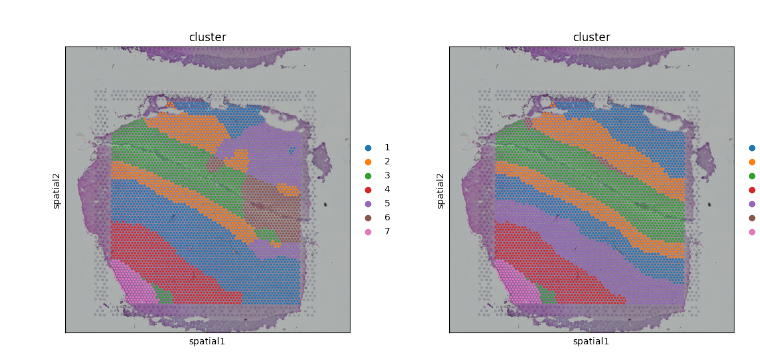
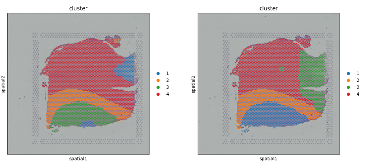

01
Bachelor’s thesis
Exploring spatial coherence in graph-based clustering
For my Bachelor’s thesis, I studied a modification to GIST, a graph neural network framework for spatial transcriptomics. I compared it with the original model across six Visium datasets and 17 experiments. The modified version often produced more spatially compact tissue domains; clustering metrics were broadly similar overall, with differences across individual samples.
The figures below are from my thesis. For background, see the original GIST paper .

